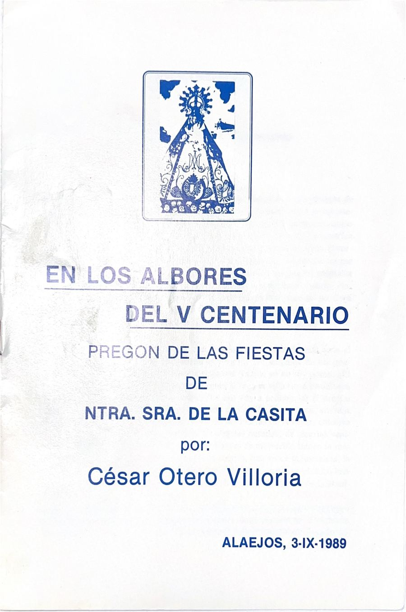

Pregón de las fiestas de 1989: «En los albores del V Centenario»
El pregón con el que César Otero Villoria abrió las fiestas de la Virgen de la Casita el 3 de septiembre de 1989, la última antes del V Centenario de la aparición. Habla de Catalina de la Cruz, de los toreros del pueblo, de las peñas y del «gato del Tío Maragato».

César Otero Villoria, alaejano, era entonces secretario general de la Diputación de Valladolid. Recibió la insignia de la villa que el Ayuntamiento entrega a los pregoneros desde 1987 (véase Los pregoneros). El texto se ha transcrito del folleto; se respetan su ortografía y sus mayúsculas, y solo se han corregido erratas evidentes de imprenta.
El pregón
Allá por el mes de julio recibí del Alcalde de Alaejos la encomienda de ser el pregonero de las Fiestas. Me acordé entonces de aquel chico de mi pueblo a quien su madre envió a hacer un encargo a casa de la vecina; ésta quiso darle una propina y él la rechazó: «No, deje, deje usted...». Ante la negativa del muchacho, la vecina desistió y entonces el muchacho dijo: «Por favor, señora, porfíeme usted, porque me ha dicho mi madre que hasta que no me porfien, no puedo coger la propina». Yo dije, en principio, que no aceptaba el encargo del pregón, que era muy difícil, que no sabría cómo hacerlo, etc. En el fondo estaba deseando, como el chico de mi pueblo, que me porfiara el Alcalde; insistió su señoría, por lo que acepté el gran honor que para mi supone estar aquí y ahora con el encargo de pregonar las Fiestas de mi pueblo.
Una vez aceptada la encomienda, se me planteó la duda de cuál sería el lenguaje que utilizaría para pronunciar el pregón: ¿El lenguaje de los poetas? La respuesta fue inmediatamente negativa, ya que yo no soy poeta. ¿El lenguaje de los historiadores? Tampoco, pues si bien la villa tiene estudiosos de su historia, yo no estoy entre ellos. Por eso voy a pronunciar el pregón con el lenguaje que mejor conozco, el habla de Castilla lisa y llana, sin más bagaje que las vivencias de muchos años en las Fiestas de Alaejos, emotiva mezcla de recuerdos de otros tiempos, de alegrías pasadas, de alegrías venideras, de ilusiones de futuro. Y es que las Fiestas de mi pueblo tienen la magia de renovar, puntualmente, cada año, la alegría, que vence la nostalgia, la ilusión, que borra los desencantos, constituyendo un remanso en el duro bregar con la vida. En el pregón se verá que es cierto aquello de que de la abundancia del corazón, habla la boca.
Un pregonero, antes de decir su mensaje, debe hacer un llamamiento a todos aquéllos a quienes va dirigido. Y así procede que yo llame la atención de quienes son los destinatarios de la buena nueva de que han llegado las Fiestas. El pregón va dirigido a vosotros, vecinos de mi pueblo, aunque yo sé que no necesitais del pobre estímulo del pregonero, para que un año más, viváis con la mayor alegría y con la mayor intensidad las Fiestas de Alaejos. El pregón va dirigido a vosotros, queridos alejanos que, como el que os habla seguís vinculados a nuestro pueblo, aunque no tengamos la suerte de vivir en su paz y en su sosiego. El pregón va dirigido a vosotros, forasteros, para que sepais que la afabilidad de mi pueblo hará que os sintais plenamente identificados e integrados en nuestra alegría.
Y dicho lo anterior, de orden del señor Alcalde y del Ilustre Concejo Municipal, hago saber que en los próximos días se van a celebrar las Fiestas de Nuestra Señora de la Casita. En ellas encontraréis festejos muy diversos, que os voy a enumerar.
Se ha celebrado un Certamen Literario, en el que la lírica y la épica de los poetas de mi patria chica, mezclada con la armoniosa voz de los rapsodas, han conseguido, una vez más, emocionar al auditorio.
Habrá dianas al amanecer y la música recorrerá calles y plazas con la alegre algarabía de las gentes jóvenes, que acompañan a los músicos.
Tendremos fuegos artificiales, que aquí llamamos «carretillas», y la explosión de sus cohetes anunciará a los cuatro vientos que está próximo el amanecer del día más grande de las Fiestas, el 8 de septiembre.
Y al llegar a este punto, la voz del pregonero no puede evitar su carga de emoción. Es el 8 de septiembre, festividad de la Virgen de la Casita. No me corresponde a mí exhortar al culto de hiperdulía a la Virgen, Patrona de Alaejos, ni intentar avivar la sólida fe mariana del mi pueblo. Para eso, como decíamos en el catecismo, «doctores tiene la Santa Madre Iglesia». Pero permitidme una reflexión en voz alta. Discuten los historiadores sobre el origen de Alaejos. Para unos es de origen árabe, para otros es un producto del proceso de la Reconquista, para otros..., etc., etc. Decía Ortega y Gasset que lo que da entidad a un pueblo no es la geografía común, ni la identidad de raza, sino el elemento espiritual colectivo, el proyecto sugestivo de vida en común. El 10 de mayo de 1490 se produjo el encuentro entre la Virgen de la Casita y Catalina de la Cruz y desde entonces, hace ya 499 años, Alaejos tiene su verdadera identidad, su elemento espiritual común. No existe la verdadera configuración de Alaejos hasta 1490; la colectividad anterior a ese año tiene una gran importancia histórica, pero el pueblo del que todos los alejanos nos consideramos parte integrante, no es otro que el transfigurado en aquel 10 de mayo. Es la presente la última Fiesta antes de que llegue la fecha jubilar del 10 de mayo de 1990, en que se celebrará el V Centenario de la Virgen de la Casita, en cuyos albores nos encontramos. Yo estoy seguro de que para la primavera próxima la Iglesia, el Concejo y los alejanos todos vibraremos con la alegría y con la emoción de vivir una fecha tan importante como es un V Centenario y más aún, si es el de nuestra propia identidad. Es la Virgen de la Casita nuestro elemento espiritual común, nuestra seña de identidad; no existe alejano que no invoque a su Patrona cuando los campos están secos, cuando los hijos se van lejos a servir al Rey o a ganarse el pan, cuando la desgracia le aflige. Y cuando en tales circunstancias se halla, busca su identidad y su refugio en la Patrona. Y es que, como decía Pemán, «hay cosas que a la madre se le dicen de modo más desenvuelto que no al padre, que por ser el padre, da más respeto».
Celebraremos también el V Centenario de Catalina de la Cruz. Grandes personajes tiene la historia de Alaejos; altas y hermosas son sus torres y cuando el rayo las hiere, hiere también nuestro corazón. Pero ni tantos señores ni fijosdalgos, ni hombres de letras, ni de ciencias, ni de toga y curia, ni de órdenes sagradas, ni de armas, pueden hacer olvidar a Catalina de la Cruz, ni provocan las torres mayor emoción en el pregonero que la tumba de Catalina en la Ermita. Recia, abnegada, trabajadora, sufrida, sacrificada incluso. Ejemplo de la raza y del tesón de los alejanos. Quinientos años pasaron ya desde tu existencia, pero sigues viva, Catalina de la Cruz, en cada alejano que brega y lucha cada día. Dice la tradición que la retama ardía sin quemarse. Igual que tu recuerdo en los corazones de Alaejos. ¡Salve, Catalina, heroína de mi pueblo!
Ernest Hemingway, en su novela «Fiesta», dice lo siguiente: «Todos los balcones y ventanas estaban llenos de gente. De pronto un gran gentío apareció por la calle, muy apretados, y sin cesar de correr calle arriba en dirección a la plaza de toros. Detrás iba otro grupo de hombres, que aún corrían más, y después los rezagados que más que correr parecían volar. Entre ellos y los toros, que los seguían pisándoles los talones, había un pequeño espacio vacío. Los toros iban galopando, subiendo y bajando la cabeza». Esta escena, magistralmente descrita por el norteamericano, tendremos ocasión de vivirla en los encierros de a-pie y de a caballo.
También os anuncio que habrá corridas de reses bravas y en ellas los valientes anónimos burlarán las embestidas a cuerpo limpio, en ese toreo peculiar de los pueblos de nuestra Castilla. Pero Alaejos es también cuna de toreros de capa y muleta y apellidos como Rapado, Ojeda, Santana, son el exponente claro de lo dicho. En la tarde del día 8 veremos la actuación de un novillero afamado y de raíces alejanas: Martín Manjarrés. Y para describir lo que será el momento cumbre de la muerte del toro, no ha encontrado el pregonero mejor descripción, que la de unos versos de Vicente Aleixandre en su poema «Corrida en el pueblo» y que dicen así:
«…
La música rodando
gira, mientras la sombra fatigada,
el cuerpo fatigado, se perfila.
¡Ahí! Se mueve el aire relámpago de acero.
La brusca zapatilla vuela.
¡Adiós! Compacto cae
el absoluto negro. El pie descalzo
posa como el de una Victoria…»
Pero no quiero dejar de hacer una loa a un torero de Alaejos, el más veterano que siempre joven, siempre con la sonrisa incipiente, ha recorrido las plazas de nuestra Castilla y las ha regado a veces con su propia sangre. Volveremos a verte, maestro, en tu lidiar de sabio veterano, en tu bien hacer de torero curtido y serio. Yo te saludo con respeto, Leonardo Rapado, de quien lo único que no me gusta es el apodo taurino —«El Machote»—, que no es eufónico, por lo que yo siempre te he llamado Leonardo Rapado «Alejanito». Vuelve a desplegar tu muleta maestra y haz otra vez cien quites en cada corrida. Todos te lo agradeceremos.
Quiero destacar el emotivo homenaje a los alejanos de más edad. Recuerdo aquí una anécdota ocurrido cuando los cardenales fueron a felicitar a León XIII con motivo de su noventa cumpleaños. El camariengo le dijo: «Hemos pedido al Espíritu Santo que conceda a Vuestra Santidad otros noventa años de vida». Y el Papa contestó: «¿Y por qué le ponen límites a la gracia de Dios?». Lo que tampoco tiene límites es nuestro afecto, nuestra gratitud y nuestro respeto a los alejanos mayores.
Habrá también festejos dedicados a los niños, así como bailes y verbenas, competiciones deportivas, etc., etc., en un programa rico y variado. Acudid a todos ellos, pero no os preocupéis demasiado del reloj, ya que, como decimos en Alaejos, las horas de pueden calcular «a fesis» y además los cohetes nos avisarán del comienzo de cada festejo.
Debo hacer una mención especial de las Peñas, que contribuirán a alegrar las Fiestas y en ellas se seguirá celebrando esa especie de Juicio oral eterno, que trata de aclarar, inútilmente, «quién mató al gato del Tío Maragato» y nos inculparemos unos a otros, sobre todo al pobre «número cuatro» por obvias razones de rima fácil. Beberemos más y más y al final volverá a quedar para otro año el empeño viejo de averiguar «quién lo mató».
Quiero ahora dirigirme a Vos, Reina de las Fiestas, así como a vuestras Damas y a la Representante de las guapas forasteras. Y no puedo hacerlo como pregonero, ya que en lo tocante a vuestra belleza y a vuestro encanto, los papeles se truecan y no hay mejor pregonero que vuestra sonrisa. Una vez más pido prestados los versos al poeta y os dedico aquellos que Lisardo dice en la comedia de Calderón de la Barca «Antes que todo, es mi dama». Y tales versos rezan así:
«En él una mujer vi
a quien por reina juraron
de las flores y las fuentes
los cristales y los cuadros,
saludando su hermosura
todo el florido aparato
de los cristales con risas,
de las flores con halagos,
de los cielos con reflejos
y de las aves con canto,
hoja a hoja, perla a perla,
tono a tono y rayo a rayo.»
Os diría mil requiebros más porque el merecimiento es evidente, pero estoy seguro de que las cuatro los recibís de los hombres jóvenes y no os hace falta que los repita el pregonero. Pero estoy seguro también de que en mis años mozos dije lisonjas y piropos a vuestras madres y por eso sólo quiero pregonar dos cosas en este punto: Una, decir a vuestras madres que mis piropos siguen en pié, porque ellas los merecieron y los siguen mereciendo. Otra, deciros a vosotras, como en la copla popular, que «bendita sea la rama que al tronco sale».
Señor Alcalde e Ilustre Concejo Municipal: Ha sido para mí un gran honor poder pregonar a mi manera las Fiestas de 1989. Yo sé que van a ser un éxito y que los forasteros y los alejanos las viviremos muy intensamente. Si el pregón salió bien o salió mal, es responsabilidad mía. Por eso quiero terminar como lo hacían los comediógrafos antiguos: Pidiendo vuestro aplauso si os gustó y si no, también para quedar tranquilo porque me habéis perdonado el yerro.
César Otero Villoria
Alaejos, 3 de septiembre de 1989
Para seguir leyendo
- Las fiestas de septiembre y la lista de pregoneros, en Fiestas de la Virgen de la Casita.
- Catalina de la Cruz y la aparición de 1490, en Ermita de la Virgen de la Casita.
- Otros pregones, en Pregones.
Cómo citar esta página
Amigos de Alaejos, «Pregón de las fiestas de 1989, de César Otero Villoria», https://www.amigosdealaejos.org/biblioteca/pregones/1989-cesar-otero-villoria/ (revisión del 21/11/2026).